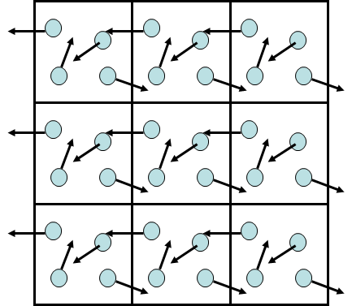
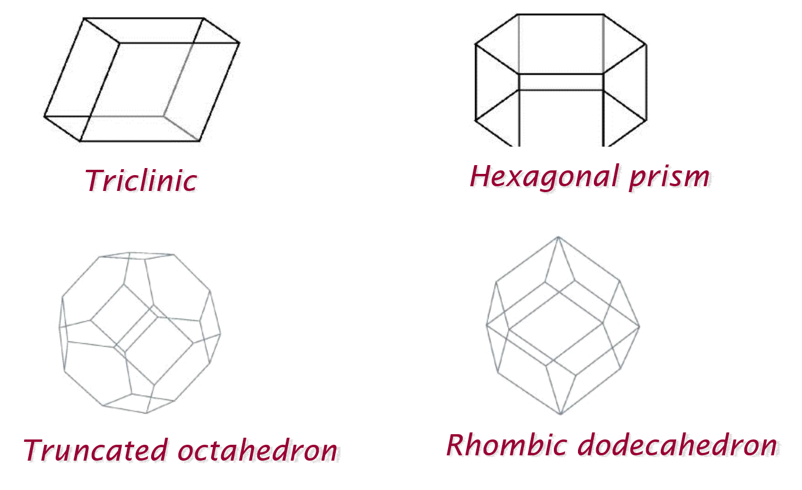
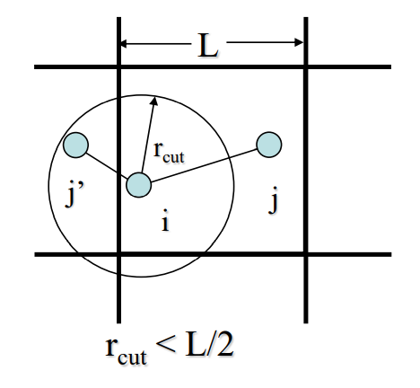

Boundary Conditions¶
Before carry out molecular simulations, a suitable system model must be chosen that can adequately capture the behaviour of molecular systems. One of the crucial factor would be the size of the system (simulation box size). If the system size is too small, this can introduce simulation artefacts that can artificially disturb the outcome of the system behaviour. If the system size is too large, one would run into issues of computational resources limitations, or practical limits of lengthy simulation times.
Ideally one would like to make a system as large as possible to simulate a realistic environment. Unless one would like to simulate systems in a confined space, introducing a hard boundary would not be a practical approach. The most common way to achieve a system size of an infinite sense is by means of introducing periodic boundary conditions (PBCs). This would prevent surface effects dominating over bulk effects, as illustrated below.
{kind=link}
In a nutshell, this means when a particle moves beyond a boundary, it will ‘wrap around’ and moves by the same amount at the opposite end of the simulation box. The simulation box in the middle is the ‘actual’ simulation system, whereas, the boxes surrounded it are the images of the centre box.
Note
The diagram above is just for illustration purposes with only neighbouring images boxes were shown. In reality, images are replicated in all directions in the infinite sense.
The most common simulation box is the cubic or orthorhombic PBCs. However, other shapes are also possible as shown below:
{kind=link}

Cutoff values and minimum image convention
For a system with PBC, the minimum image convention must be applied to find the shortest possible distances between particle pairs for potential and force calculations. This means the selected atom pairs could either be originated from the actual simulation box or from its image.
For the minimum image convention to work, the interaction cutoff \(r_{cut}\) must be set to no more than half of the smallest simulation cell width.
For instance, if a system is a cubic box of size 40 angstrom with PBC, then \(r_{cut}\) must not be larger than 20 angstrom.
{kind=link}
Diagram on the left illustrates the minimum image convention. Consider a simulation box (in 2D projection) of length L. To calculate the forces acting between atom i and j, the shorter interatomic distance between atom i and the atom j image (j’) is chosen.
To calculate van-der-Waals (vdw) interactions, only consider interatomic distances according to minimum image convention.
If very long-range interactions are required, e.g. for charge-based electrostatics, PBCs enable the use of Ewald summation to split the interactions into real space and reciprocal space parts: pairwise calculations with a cutoff are used for real space contributions, while the reciprocal space part deals with large numbers of periodic images for the system by applying Fourier transforms.
For more information, see Distance cutoffs and Ewald sums in the Classical Force Field section.